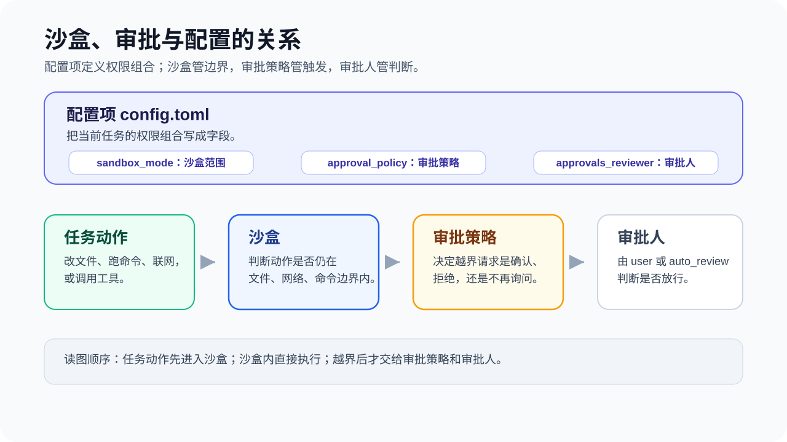

团队使用 Codex 的关键是把规则写清楚、把验证跑起来、把案例沉淀下来。

团队接入清单#
| 项目 | 建议 |
|---|---|
AGENTS.md |
写清项目结构、命令、风格、安全边界 |
| Team Config | 用 .codex/config.toml、rules/ 和 skills/ 共享项目配置与工作流 |
| 测试命令 | 提供最小相关测试和全量测试命令 |
| PR 模板 | 要求说明 Codex 参与范围、验证结果和风险 |
| 安全规则 | 明确生产数据、密钥、发布、迁移的审批要求 |
| 案例库 | 把成功任务和失败复盘都沉淀下来 |
团队版 AGENTS.md 提纲#
# AGENTS.md
## 项目概览
## 常用命令
## 目录边界
## 代码规范
## 测试要求
## 安全边界
## PR 交付要求
## Code Review Rules共享规则与个人偏好#
团队的共同规则建议放进 AGENTS.md，例如项目结构、命令、测试要求、目录边界和安全红线。个人本机路径、私有工具习惯、临时限制和回复偏好，可以放进已加入 ignore 的 AGENTS.override.md。AGENTS.local.md 不是 Codex 默认识别的文件名；如需使用，请参考 团队共享规则和本地私有规则 把它加入 project_doc_fallback_filenames，或通过经过审查的社区工具加载。
除了 AGENTS.md 中的文字规则，团队还可以通过仓库中的 .codex/config.toml、.codex/rules/ 和 .codex/skills/ 共享默认配置、命令规则和可复用工作流。如果管理员需要强制审批、沙箱或可用权限边界，应使用托管配置或 requirements.toml，不要只依赖项目中的建议性规则。
如果团队还希望使用独立的本地规则文件，并且允许引入社区工具，可以再评估 codex-agents-local。使用前，请确认 AGENTS.local.md 和 AGENTS.override.md 已加入 ignore，并让 Codex 审查安装步骤会对 ~/.local/bin 和 ~/.codex/hooks.json 做出哪些修改。
安全边界#
制定安全规则时，不要只笼统地写“是否允许联网”。文件写入、本地命令访问网络、Web Search、Apps/MCP、Browser/Computer Use 和云端任务属于不同的能力，应分别设置边界。其中，沙箱模式决定 Codex 能够执行哪些操作，审批策略则决定执行前是否需要询问用户。
PR 描述模板#
## 背景
## 改动
## Codex 参与范围
## 验证
## 风险
## 截图或日志团队可以在 GitHub Pull Request 中评论 @codex review 发起审查，也可以在设置中开启自动审查。如果需要自定义审查要求，可以在 AGENTS.md 中添加 ## Code Review Rules：仓库通用规则放在根目录，特定服务的规则放在对应子目录。
格式化和 lint 等结果明确的检查继续交给 CI。Codex 可以提供额外的审查意见，但不能代替测试、分支保护和人工批准。
并行任务与 Worktree#
需要并行处理任务时，可以让 Codex 在独立的 Worktree 中工作，避免影响当前工作区。Codex 托管的 Worktree 默认不绑定分支；后续如果需要在本地环境中检查改动、运行服务或继续开发，可以使用 Handoff 把对话和改动移交到 Local。
新建 Worktree 时，Git 忽略的文件默认不会被带入。如果任务确实依赖其中的本地配置，可以在仓库根目录的 .worktreeinclude 中列出需要复制的文件。只添加完成任务必需的内容。
例会复盘问题#
- 哪类任务 Codex 表现稳定？
- 哪类任务容易失控或需要更强约束？
- 哪些命令、规则、截图说明应该写入
AGENTS.md？ - 哪些成功案例可以沉淀成模板？
- 哪些失败案例应该写入排障手册？
- 哪些高质量 PR 和评论可以纳入团队评估集？
- Codex 审查评论的有效率、噪声和人工反馈如何？
Codex 可以承担第一轮实现或审查，但工程师仍然负责理解改动、完成最终验证，并对合并和上线结果负责。
下一步#
下一步：排障手册。